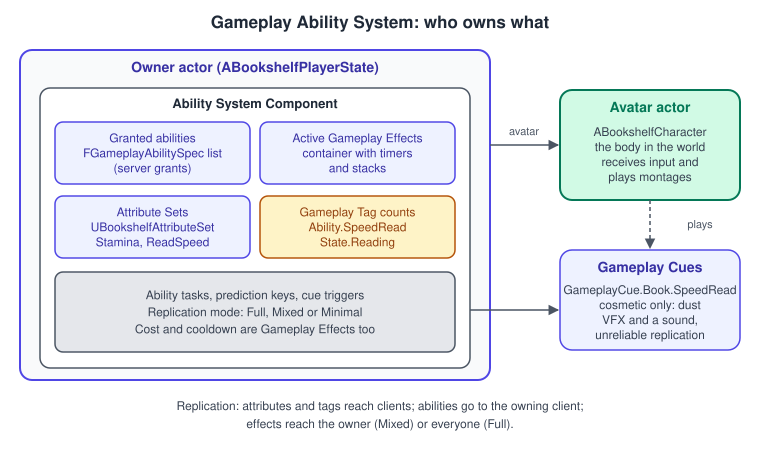
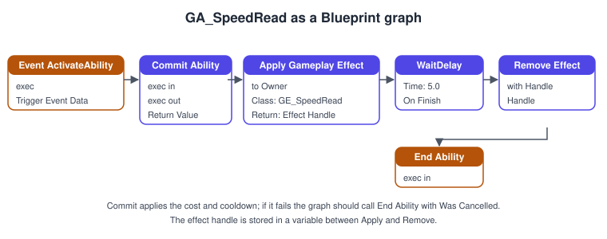
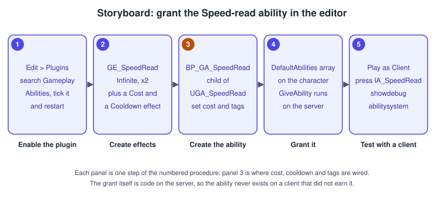

Gameplay Ability System
|
This content was generated with the assistance of AI and should be verified against the official documentation before being relied on in production. |
A game quickly collects "things a character can do" that all share the same bookkeeping: they cost something, they cool down, they can be blocked by a state, they change numbers such as health or speed for a while, they have to look and sound right on every screen, and in a multiplayer game they have to feel instant for the player who triggered them yet stay under the server’s control. The Gameplay Ability System (GAS) is Epic’s plugin for exactly that bookkeeping. Epic describes it as a framework for building attributes, abilities and interactions that an Actor can own and trigger. It does not add gameplay by itself; it gives you a vocabulary (abilities, effects, attributes, tags, cues) and a replication and prediction layer that already works.
The facts on this page were checked in November 2026 against the Unreal Engine 5.8 documentation (5.8 was released on 2026-06-17, and the latest hotfix found is 5.8.4). GAS ships as the Gameplay Abilities plugin in the engine, works on every platform the engine supports, and is used by Epic’s Lyra sample. The running example is the Bookshelf’s Speed-read power: the player presses a key, spends stamina, reads books twice as fast for five seconds, and then waits ten seconds before doing it again. It is built from UGA_SpeedRead, UBookshelfAttributeSet and a handful of Blueprint assets. The page assumes the Gameplay Framework (PlayerState, Pawn, possession) and the basics of Networking and Replication; GAS adds its own prediction scheme on top of both.
When to use GAS, and when not
GAS pays off when a game has many abilities that interact (a status effect that blocks sprinting, a buff that stacks, a cooldown shared by two skills), when designers should assemble abilities from data without code, or when a multiplayer game needs predicted abilities. It is a poor fit for a game with two or three hard-coded actions: the plugin has a steep learning curve, every attribute needs boilerplate, and a plain component with a replicated float is easier to read. The Bookshelf uses GAS on purpose, as a small worked example, not because a library needs it.
The pieces

| Part | What it is |
|---|---|
Ability System Component (ASC) |
A component, |
Attribute Set |
A |
Gameplay Ability |
A |
Gameplay Effect |
A data asset ( |
Gameplay Tag |
A hierarchical name such as |
Gameplay Cue |
Cosmetic feedback (particles, sounds) selected by a tag starting with |
Ability Task |
A |
Enabling GAS
In the editor open Edit > Plugins, search for Gameplay Abilities, tick it and restart. Then add the modules to the project so the C++ compiles: GameplayAbilities (the framework), GameplayTags (tags) and GameplayTasks (the base of Ability Tasks). The Gameplay Tags used by the examples also have to exist; the cheapest way is a tag list in Config/DefaultGameplayTags.ini, which the project loads when Import Tags From Config is enabled in the Gameplay Tags project settings.
// Source/Bookshelf/Bookshelf.Build.cs (the dependency list of the module)
using UnrealBuildTool;
public class Bookshelf : ModuleRules
{
public Bookshelf(ReadOnlyTargetRules Target) : base(Target)
{
PCHUsage = PCHUsageMode.UseExplicitOrSharedPCHs;
PublicDependencyModuleNames.AddRange(new string[]
{
"Core", "CoreUObject", "Engine", "InputCore", "EnhancedInput",
"GameplayAbilities", "GameplayTags", "GameplayTasks"
});
}
}; Config/DefaultGameplayTags.ini
[/Script/GameplayTags.GameplayTagsSettings]
+GameplayTagList=(Tag="Ability.SpeedRead",DevComment="The Speed-read ability asset tag")
+GameplayTagList=(Tag="State.Reading",DevComment="Owner is reading fast")
+GameplayTagList=(Tag="Cooldown.SpeedRead",DevComment="Granted while Speed-read cools down")
+GameplayTagList=(Tag="Data.Stamina",DevComment="Set-by-caller magnitude for stamina changes")
+GameplayTagList=(Tag="GameplayCue.Book.SpeedRead",DevComment="Dust cue played while reading fast")The Ability System Component: owner and avatar
The ASC belongs to an owner actor and acts through an avatar actor. The owner is the Actor that logically owns the component; the avatar is the physical Actor in the world, usually a Pawn. They can be the same Actor. The call that tells the ASC which is which is InitAbilityActorInfo(Owner, Avatar), and it fills the FGameplayAbilityActorInfo structure that every ability reads.
Two layouts are common:
-
ASC on the Pawn. One actor, one lifetime: when the Pawn dies, the ASC, its attributes and its cooldowns go with it. This suits AI characters such as the
ALibrarianCharacter, and simple games.InitAbilityActorInfo(this, this)is called when the actor is possessed or begins play. -
ASC on the PlayerState. The ASC survives respawns and possession changes, so stamina, tags and cooldowns persist while the avatar is replaced. This is the usual choice for a player character, and the Bookshelf uses it. The Pawn forwards
GetAbilitySystemComponent()to the PlayerState, which Epic’s documentation allows (an Actor may use an ASC owned by another Actor, and several Actors can share one ASC, but one Actor cannot have two).
An Actor that exposes an ASC implements IAbilitySystemInterface and overrides GetAbilitySystemComponent(). Cache the pointer rather than calling through a chain of casts on every query.
Replication modes
SetReplicationMode chooses how much of the effect state is sent, with the EGameplayEffectReplicationMode enumeration:
| Mode | Behaviour |
|---|---|
|
Full effect information goes to every client. Simple, and right for a single-player game or a tiny co-op session, but it costs bandwidth that grows with the player count. |
|
Minimal effect information goes to simulated proxies and full information to the owning (autonomous) client. Attributes and tags still reach everyone. This is the recommended mode for player characters. |
|
Only minimal effect information is replicated to anyone. Suits AI-controlled actors that no client owns. |
In every mode the ASC does not replicate abilities and effects to all clients, only the attributes and tags they affect, so an ability that must be visible to others has to express itself through attributes, tags, replicated montages or Gameplay Cues.
Attributes and Attribute Sets
An attribute is a float with two values. The base value is the persistent number, changed by instant effects and by SetNumericAttributeBase. The current value is the base value with the modifiers of all active duration and infinite effects applied; it is what logic should read. Epic’s example: a Jump Height base of 100 with a 70 percent effect has a current value of 70, and if the base rises to 110 the current value becomes 77 while the effect stays. When a duration effect ends, only its modifier disappears.
FGameplayAttributeData does not clamp. Restrict values in the Attribute Set. The usual places are PreAttributeChange (clamp the current value just before it changes) and PostGameplayEffectExecute (clamp the base value after an instant effect ran). The four accessor macros of AttributeSet.h generate a static FGameplayAttribute getter, a value getter, a setter and an initialiser; the file’s comment suggests wrapping them in one ATTRIBUTE_ACCESSORS macro, which the example does.
UBookshelfAttributeSet
// BookshelfAttributeSet.h
#pragma once
#include "CoreMinimal.h"
#include "AttributeSet.h"
#include "AbilitySystemComponent.h"
#include "BookshelfAttributeSet.generated.h"
#define ATTRIBUTE_ACCESSORS(ClassName, PropertyName) \
GAMEPLAYATTRIBUTE_PROPERTY_GETTER(ClassName, PropertyName) \
GAMEPLAYATTRIBUTE_VALUE_GETTER(PropertyName) \
GAMEPLAYATTRIBUTE_VALUE_SETTER(PropertyName) \
GAMEPLAYATTRIBUTE_VALUE_INITTER(PropertyName)
/** Numbers of a reader: how tired they are and how fast they read. */
UCLASS()
class BOOKSHELF_API UBookshelfAttributeSet : public UAttributeSet
{
GENERATED_BODY()
public:
virtual void GetLifetimeReplicatedProps(TArray<FLifetimeProperty>& OutLifetimeProps) const override;
virtual void PreAttributeChange(const FGameplayAttribute& Attribute, float& NewValue) override;
virtual void PostGameplayEffectExecute(const FGameplayEffectModCallbackData& Data) override;
UPROPERTY(BlueprintReadOnly, Category = "Attributes", ReplicatedUsing = OnRep_Stamina)
FGameplayAttributeData Stamina;
ATTRIBUTE_ACCESSORS(UBookshelfAttributeSet, Stamina)
UPROPERTY(BlueprintReadOnly, Category = "Attributes", ReplicatedUsing = OnRep_MaxStamina)
FGameplayAttributeData MaxStamina;
ATTRIBUTE_ACCESSORS(UBookshelfAttributeSet, MaxStamina)
/** Pages per second; the Speed-read effect multiplies it. */
UPROPERTY(BlueprintReadOnly, Category = "Attributes", ReplicatedUsing = OnRep_ReadSpeed)
FGameplayAttributeData ReadSpeed;
ATTRIBUTE_ACCESSORS(UBookshelfAttributeSet, ReadSpeed)
protected:
UFUNCTION()
virtual void OnRep_Stamina(const FGameplayAttributeData& OldValue);
UFUNCTION()
virtual void OnRep_MaxStamina(const FGameplayAttributeData& OldValue);
UFUNCTION()
virtual void OnRep_ReadSpeed(const FGameplayAttributeData& OldValue);
};// BookshelfAttributeSet.cpp
#include "BookshelfAttributeSet.h"
#include "GameplayEffectExtension.h"
#include "Net/UnrealNetwork.h"
void UBookshelfAttributeSet::GetLifetimeReplicatedProps(TArray<FLifetimeProperty>& OutLifetimeProps) const
{
Super::GetLifetimeReplicatedProps(OutLifetimeProps);
DOREPLIFETIME_CONDITION_NOTIFY(UBookshelfAttributeSet, Stamina, COND_None, REPNOTIFY_Always);
DOREPLIFETIME_CONDITION_NOTIFY(UBookshelfAttributeSet, MaxStamina, COND_None, REPNOTIFY_Always);
DOREPLIFETIME_CONDITION_NOTIFY(UBookshelfAttributeSet, ReadSpeed, COND_None, REPNOTIFY_Always);
}
void UBookshelfAttributeSet::PreAttributeChange(const FGameplayAttribute& Attribute, float& NewValue)
{
Super::PreAttributeChange(Attribute, NewValue);
if (Attribute == GetStaminaAttribute())
{
NewValue = FMath::Clamp(NewValue, 0.0f, GetMaxStamina());
}
else if (Attribute == GetReadSpeedAttribute())
{
NewValue = FMath::Max(NewValue, 0.0f);
}
}
void UBookshelfAttributeSet::PostGameplayEffectExecute(const FGameplayEffectModCallbackData& Data)
{
Super::PostGameplayEffectExecute(Data);
// An instant effect changed the base value; keep it inside its range as well.
if (Data.EvaluatedData.Attribute == GetStaminaAttribute())
{
SetStamina(FMath::Clamp(GetStamina(), 0.0f, GetMaxStamina()));
}
}
void UBookshelfAttributeSet::OnRep_Stamina(const FGameplayAttributeData& OldValue)
{
GAMEPLAYATTRIBUTE_REPNOTIFY(UBookshelfAttributeSet, Stamina, OldValue);
}
void UBookshelfAttributeSet::OnRep_MaxStamina(const FGameplayAttributeData& OldValue)
{
GAMEPLAYATTRIBUTE_REPNOTIFY(UBookshelfAttributeSet, MaxStamina, OldValue);
}
void UBookshelfAttributeSet::OnRep_ReadSpeed(const FGameplayAttributeData& OldValue)
{
GAMEPLAYATTRIBUTE_REPNOTIFY(UBookshelfAttributeSet, ReadSpeed, OldValue);
}Initial values can come from a Data Table of the AttributeMetaData row type (rows named AttributeSetName.AttributeName, columns BaseValue, MinValue, MaxValue, DerivedAttributeInfo and bCanStack; the minimum and maximum have no effect in the default plugin, so the clamp above is still needed), from an Init function with hard-coded values, or from the Default Starting Data of the ASC in Blueprint.
The owner of the ASC: ABookshelfPlayerState
// BookshelfPlayerState.h
#pragma once
#include "CoreMinimal.h"
#include "AbilitySystemInterface.h"
#include "GameFramework/PlayerState.h"
#include "BookshelfPlayerState.generated.h"
class UAbilitySystemComponent;
class UBookshelfAttributeSet;
UCLASS()
class BOOKSHELF_API ABookshelfPlayerState : public APlayerState, public IAbilitySystemInterface
{
GENERATED_BODY()
public:
ABookshelfPlayerState();
virtual UAbilitySystemComponent* GetAbilitySystemComponent() const override;
UBookshelfAttributeSet* GetBookshelfAttributes() const { return AttributeSet; }
private:
UPROPERTY(VisibleAnywhere, Category = "Abilities")
TObjectPtr<UAbilitySystemComponent> AbilitySystemComponent;
UPROPERTY()
TObjectPtr<UBookshelfAttributeSet> AttributeSet;
};// BookshelfPlayerState.cpp
#include "BookshelfPlayerState.h"
#include "AbilitySystemComponent.h"
#include "BookshelfAttributeSet.h"
ABookshelfPlayerState::ABookshelfPlayerState()
{
AbilitySystemComponent = CreateDefaultSubobject<UAbilitySystemComponent>(TEXT("AbilitySystemComponent"));
AbilitySystemComponent->SetIsReplicated(true);
AbilitySystemComponent->SetReplicationMode(EGameplayEffectReplicationMode::Mixed);
// The set is registered with the ASC automatically when it is created as a default subobject of the owner.
AttributeSet = CreateDefaultSubobject<UBookshelfAttributeSet>(TEXT("AttributeSet"));
// A PlayerState replicates rarely by default; the ASC needs timely updates.
SetNetUpdateFrequency(100.0f);
}
UAbilitySystemComponent* ABookshelfPlayerState::GetAbilitySystemComponent() const
{
return AbilitySystemComponent;
}The avatar: ABookshelfCharacter
The Character must initialise the ASC’s actor info on both sides. On the server the moment is PossessedBy; on a client the PlayerState arrives through replication, so the moment is OnRep_PlayerState. Granting abilities is server-only and goes in PossessedBy after the initialisation; it checks that the ability was not already granted, because a Pawn can be possessed more than once.
// BookshelfCharacter.h (the parts that matter for GAS)
#pragma once
#include "CoreMinimal.h"
#include "AbilitySystemInterface.h"
#include "GameFramework/Character.h"
#include "BookshelfCharacter.generated.h"
class UAbilitySystemComponent;
class UGameplayAbility;
class UGameplayEffect;
class UInputAction;
struct FInputActionValue;
UCLASS()
class BOOKSHELF_API ABookshelfCharacter : public ACharacter, public IAbilitySystemInterface
{
GENERATED_BODY()
public:
virtual UAbilitySystemComponent* GetAbilitySystemComponent() const override;
virtual void PossessedBy(AController* NewController) override;
virtual void OnRep_PlayerState() override;
virtual void SetupPlayerInputComponent(UInputComponent* PlayerInputComponent) override;
/** Server only: lowers or raises stamina through an instant Gameplay Effect with a set-by-caller magnitude. */
void AddStamina(float Delta);
protected:
UPROPERTY(EditDefaultsOnly, Category = "Abilities")
TArray<TSubclassOf<UGameplayAbility>> DefaultAbilities;
UPROPERTY(EditDefaultsOnly, Category = "Abilities")
TSubclassOf<UGameplayEffect> StaminaChangeEffect;
UPROPERTY(EditDefaultsOnly, Category = "Abilities")
TSubclassOf<UGameplayAbility> SpeedReadAbility;
UPROPERTY(EditDefaultsOnly, Category = "Input")
TObjectPtr<UInputAction> SpeedReadAction;
private:
void OnSpeedReadStarted(const FInputActionValue& Value);
};// BookshelfCharacter.cpp (the parts that matter for GAS)
#include "BookshelfCharacter.h"
#include "AbilitySystemComponent.h"
#include "Abilities/GameplayAbility.h"
#include "BookshelfGameplayTags.h"
#include "BookshelfPlayerState.h"
#include "EnhancedInputComponent.h"
#include "GameplayEffect.h"
#include "InputAction.h"
UAbilitySystemComponent* ABookshelfCharacter::GetAbilitySystemComponent() const
{
const ABookshelfPlayerState* PS = GetPlayerState<ABookshelfPlayerState>();
return PS ? PS->GetAbilitySystemComponent() : nullptr;
}
void ABookshelfCharacter::PossessedBy(AController* NewController)
{
Super::PossessedBy(NewController);
UAbilitySystemComponent* ASC = GetAbilitySystemComponent();
if (!ASC)
{
return;
}
ASC->InitAbilityActorInfo(GetPlayerState(), this);
for (const TSubclassOf<UGameplayAbility>& AbilityClass : DefaultAbilities)
{
if (AbilityClass && !ASC->FindAbilitySpecFromClass(AbilityClass))
{
ASC->GiveAbility(FGameplayAbilitySpec(AbilityClass, 1, INDEX_NONE, this));
}
}
}
void ABookshelfCharacter::OnRep_PlayerState()
{
Super::OnRep_PlayerState();
if (UAbilitySystemComponent* ASC = GetAbilitySystemComponent())
{
ASC->InitAbilityActorInfo(GetPlayerState(), this);
}
}
void ABookshelfCharacter::SetupPlayerInputComponent(UInputComponent* PlayerInputComponent)
{
Super::SetupPlayerInputComponent(PlayerInputComponent);
if (UEnhancedInputComponent* Input = Cast<UEnhancedInputComponent>(PlayerInputComponent))
{
Input->BindAction(SpeedReadAction, ETriggerEvent::Started, this, &ABookshelfCharacter::OnSpeedReadStarted);
}
}
void ABookshelfCharacter::OnSpeedReadStarted(const FInputActionValue& Value)
{
if (UAbilitySystemComponent* ASC = GetAbilitySystemComponent())
{
// Runs on the client first when the ability is LocalPredicted, then on the server.
ASC->TryActivateAbilityByClass(SpeedReadAbility);
}
}
void ABookshelfCharacter::AddStamina(float Delta)
{
UAbilitySystemComponent* ASC = GetAbilitySystemComponent();
if (!HasAuthority() || !ASC || !StaminaChangeEffect)
{
return;
}
FGameplayEffectContextHandle Context = ASC->MakeEffectContext();
Context.AddSourceObject(this);
const FGameplayEffectSpecHandle Spec = ASC->MakeOutgoingSpec(StaminaChangeEffect, 1.0f, Context);
if (Spec.IsValid())
{
Spec.Data->SetSetByCallerMagnitude(TAG_Data_Stamina, Delta);
ASC->ApplyGameplayEffectSpecToSelf(*Spec.Data.Get());
}
}The native tag TAG_Data_Stamina above is declared once so that code never spells a tag name twice:
// BookshelfGameplayTags.h
#pragma once
#include "NativeGameplayTags.h"
BOOKSHELF_API UE_DECLARE_GAMEPLAY_TAG_EXTERN(TAG_Data_Stamina);
BOOKSHELF_API UE_DECLARE_GAMEPLAY_TAG_EXTERN(TAG_State_Reading);
// BookshelfGameplayTags.cpp
#include "BookshelfGameplayTags.h"
UE_DEFINE_GAMEPLAY_TAG(TAG_Data_Stamina, "Data.Stamina");
UE_DEFINE_GAMEPLAY_TAG(TAG_State_Reading, "State.Reading");Source: Using Gameplay Tags
Gameplay Abilities
Lifecycle
TryActivateAbility is the normal entry point: it calls CanActivateAbility (the check that UI uses to grey out an icon) and, if that passes, CallActivateAbility, which runs your ActivateAbility. Inside it the ability calls CommitAbility, which spends the cost and starts the cooldown; committing late is useful when the player may still abort during a wind-up. Abilities do not do their work in a tick function: they start Ability Tasks and react to the delegates. The ability must call EndAbility itself, unless it was cancelled. If it forgets, the system keeps treating the ability as running, which can block it and every ability it blocks. CancelAbility can be called from outside; the ability’s CanBeCanceled can refuse.
Only the server can grant or revoke abilities (GiveAbility, GiveAbilityAndActivateOnce, ClearAbility, SetRemoveAbilityOnEnd, ClearAllAbilities).
Instancing policy
| Policy | Meaning |
|---|---|
Instanced per Execution |
A new object is spawned on each run, so Blueprint graphs and member variables are fully usable. Best for rare abilities (an ultimate). |
Instanced per Actor |
One object per Actor, reused on later runs. Member variables must be cleaned up between runs. Suits replicated abilities. The Speed-read ability uses it, and cleans up its effect handle in |
Non-Instanced |
No object is spawned; the class default object runs. It must be written in C++, cannot store state, cannot bind delegates during execution and cannot replicate variables or RPCs. Best for very frequent abilities used by many characters. |
Net execution policy
| Policy | Meaning |
|---|---|
Local Predicted |
Runs locally at once; the server can override the outcome. This is client-side prediction. |
Local Only |
Runs only on the client (and on the server if the client is the host or the game is single-player). |
Server Initiated |
Runs on the server and propagates to the client; accurate, with a perceptible delay because nothing is predicted. |
Server Only |
Runs only on the server; data outside the ability still replicates, so clients see the effects. |
A separate Replication Policy (yes or no) says whether the ability replicates its instances, state updates and Gameplay Events. For player abilities that need nothing from instances on other machines, leave it off.
Tags that control abilities
Each ability carries tag containers that decide when it may run: Cancel Abilities With Tag and Block Abilities With Tag act on other abilities while this one executes; Activation Owned Tags are granted to the owner while it runs; Activation Required Tags must all be on the owner, Activation Blocked Tags must all be absent; Target Required Tags and Target Blocked Tags do the same for the target. Set them in the ability’s class defaults, which is why the C++ class below leaves them to its Blueprint subclass.
UGA_SpeedRead
// GA_SpeedRead.h
#pragma once
#include "CoreMinimal.h"
#include "Abilities/GameplayAbility.h"
#include "ActiveGameplayEffectHandle.h"
#include "GA_SpeedRead.generated.h"
class UGameplayEffect;
/** Doubles the reading speed for a few seconds; cost, cooldown and tags are set in the Blueprint subclass. */
UCLASS()
class BOOKSHELF_API UGA_SpeedRead : public UGameplayAbility
{
GENERATED_BODY()
public:
UGA_SpeedRead();
virtual void ActivateAbility(const FGameplayAbilitySpecHandle Handle,
const FGameplayAbilityActorInfo* ActorInfo,
const FGameplayAbilityActivationInfo ActivationInfo,
const FGameplayEventData* TriggerEventData) override;
virtual void EndAbility(const FGameplayAbilitySpecHandle Handle,
const FGameplayAbilityActorInfo* ActorInfo,
const FGameplayAbilityActivationInfo ActivationInfo,
bool bReplicateEndAbility, bool bWasCancelled) override;
protected:
/** Infinite effect that multiplies ReadSpeed; removed when the ability ends. */
UPROPERTY(EditDefaultsOnly, Category = "SpeedRead")
TSubclassOf<UGameplayEffect> SpeedBoostEffect;
UPROPERTY(EditDefaultsOnly, Category = "SpeedRead", meta = (ClampMin = "0.1"))
float BoostSeconds = 5.0f;
private:
UFUNCTION()
void OnBoostFinished();
FActiveGameplayEffectHandle BoostHandle;
};// GA_SpeedRead.cpp
#include "GA_SpeedRead.h"
#include "Abilities/Tasks/AbilityTask_WaitDelay.h"
#include "Bookshelf.h"
#include "GameplayEffect.h"
UGA_SpeedRead::UGA_SpeedRead()
{
InstancingPolicy = EGameplayAbilityInstancingPolicy::InstancedPerActor;
NetExecutionPolicy = EGameplayAbilityNetExecutionPolicy::LocalPredicted;
}
void UGA_SpeedRead::ActivateAbility(const FGameplayAbilitySpecHandle Handle,
const FGameplayAbilityActorInfo* ActorInfo,
const FGameplayAbilityActivationInfo ActivationInfo,
const FGameplayEventData* TriggerEventData)
{
// Spends the cost and starts the cooldown; fails if either is not affordable any more.
if (!CommitAbility(Handle, ActorInfo, ActivationInfo))
{
EndAbility(Handle, ActorInfo, ActivationInfo, true, true);
return;
}
if (!SpeedBoostEffect)
{
UE_LOG(LogBookshelf, Warning, TEXT("UGA_SpeedRead has no SpeedBoostEffect assigned."));
EndAbility(Handle, ActorInfo, ActivationInfo, true, true);
return;
}
BoostHandle = BP_ApplyGameplayEffectToOwner(SpeedBoostEffect);
// The ability stays active for the boost; the task ends with the ability if it is cancelled earlier.
UAbilityTask_WaitDelay* Wait = UAbilityTask_WaitDelay::WaitDelay(this, BoostSeconds);
Wait->OnFinish.AddDynamic(this, &UGA_SpeedRead::OnBoostFinished);
Wait->ReadyForActivation();
}
void UGA_SpeedRead::OnBoostFinished()
{
K2_EndAbility();
}
void UGA_SpeedRead::EndAbility(const FGameplayAbilitySpecHandle Handle,
const FGameplayAbilityActorInfo* ActorInfo,
const FGameplayAbilityActivationInfo ActivationInfo,
bool bReplicateEndAbility, bool bWasCancelled)
{
// An InstancedPerActor ability is reused, so leave no state behind.
if (BoostHandle.IsValid())
{
BP_RemoveGameplayEffectFromOwnerWithHandle(BoostHandle);
BoostHandle.Invalidate();
}
Super::EndAbility(Handle, ActorInfo, ActivationInfo, bReplicateEndAbility, bWasCancelled);
}Source: Using Gameplay Abilities and Gameplay Ability Tasks
The Blueprint equivalent

Designers usually build abilities in Blueprint. A Blueprint ability implements the Activate Ability event (or Activate Ability From Event when a Gameplay Event triggers it), and its nodes are the same calls as the C++: Commit Ability, Apply Gameplay Effect To Owner, WaitDelay, Remove Gameplay Effect From Owner With Handle and End Ability. The C++ base class is still worth having when the logic must be fast, shared or non-instanced; Blueprint subclasses then set the tags, cost and cooldown.
Gameplay Effects
A Gameplay Effect is the only sanctioned way to change an attribute that other systems must understand, because it carries its own lifetime, tags and replication. Its duration policy is one of three:
-
Instant: executed once and never stored in the Active Gameplay Effects container. Damage and healing. It changes the base value.
-
Has Duration: added to the container and removed after a time. It changes the current value, and the change is undone when it ends.
-
Infinite: added and kept until something removes it. The Speed-read boost is infinite and removed by its ability.
Effects with a non-instant duration can also be periodic: at each period the effect is executed (poison, regeneration, stamina drain). A modifier names an attribute, an operation (add, multiply, divide or override) and a magnitude, and can carry tag requirements. The magnitude can be a fixed or curve-scaled value, a value read from another attribute, a custom calculation class, or a set-by-caller value passed in code, as AddStamina does with the tag Data.Stamina. Stacking decides what happens when the target already has the effect: build toward a threshold, keep a stack count up to a maximum, reset or extend the timer, or run independent instances.
Since the effect asset became component-based, behaviour is added with Gameplay Effect Components. The ones documented by Epic are:
| Component | Purpose |
|---|---|
|
Grants tags to the target (the cooldown tag, |
|
Tags the effect asset itself; these tags do not transfer to actors. |
|
Requires tags on the target for the effect to apply or continue. |
|
Blocks abilities that have given tags. |
|
Sets the probability that the effect applies. |
|
Tries to apply further effects under conditions. |
|
Removes other effects based on conditions. |
|
Blocks application of other effect specs. |
|
Calls a custom application requirement function. |
Custom components must be written in native code. For equations that modifiers cannot express, a UGameplayEffectExecutionCalculation defines custom behaviour when the effect executes.
Cost and cooldown
Cost and cooldown are ordinary effects. The ability’s Cost Gameplay Effect Class is an instant effect that subtracts stamina (GE_SpeedReadCost, an additive modifier of -20 on Stamina). The Cooldown Gameplay Effect Class is a duration effect of ten seconds that grants the tag Cooldown.SpeedRead to the owner; an ability cannot start while its cooldown tag is present, and the remaining time can be read from the active effect for a UI. CommitAbility applies both.
Gameplay Cues
A Gameplay Cue separates what a gameplay change looks like from what it does. The cue is chosen by a tag that must start with GameplayCue, for example GameplayCue.Book.SpeedRead, and is implemented by a cue notify asset with four overridable functions: On Active (it started), While Active (it is, also for late joiners), Removed and Executed (an instant effect or a periodic tick; Gameplay Effects only). A Gameplay Effect lists the cue tags it triggers, or an ability can fire one directly through the ASC. The Bookshelf’s cue spawns the NS_BookDust Niagara system on the avatar and plays a page-flip sound.
Cues do not use reliable replication, so they are for cosmetic feedback only. Anything that must reach every client for gameplay reasons belongs in an attribute, a tag or a replicated montage played by an Ability Task. Cues are cheap on the network because only the tag and a little context travel, never the particle data.
Prediction
When an ability is Local Predicted, the client activates it at once and tells the server; if the server rejects it, the local changes must be undone. The client sends a prediction key with its request, and effects and cues created under that key are matched to the server’s results. Most non-instant Gameplay Effects support rollback; instant effects such as damage do not, so they are not predicted on the client. Spending stamina through an instant cost effect is therefore applied on the server and confirmed to the client, while the duration-based boost applies immediately on both sides. The ability’s code does not manage keys itself: CommitAbility and the apply functions use the current prediction window.
The remote activation case needs one more rule: the Actor that owns the ASC must be owned by a locally controlled player for the client to activate an ability on the server. That is another reason the ASC on the PlayerState sets the Pawn as avatar and why OnRep_PlayerState must initialise the actor info before the first input.
Procedure: grant Speed-read to the Bookshelf player

-
Open Edit > Plugins, search for Gameplay Abilities, enable it and restart the editor. Add the three modules to
Bookshelf.Build.csand compile. -
In the Content Browser create a Blueprint class whose parent is
GameplayEffectnamedGE_SpeedRead. Set Duration Policy to Infinite, add a modifier onUBookshelfAttributeSet.ReadSpeedwith operation Multiply and magnitude 2. -
Create
GE_SpeedReadCost(Instant, one modifier: attributeStamina, operation Add, magnitude -20) andGE_SpeedReadCooldown(Has Duration, 10 seconds, with a Target Tags component (UTargetTagsGameplayEffectComponent) addingCooldown.SpeedRead). -
Create a Blueprint class whose parent is
UGA_SpeedReadnamedBP_GA_SpeedRead. In the class defaults set Speed Boost Effect toGE_SpeedRead, Cost Gameplay Effect Class, Cooldown Gameplay Effect Class, and the tags: the asset tagAbility.SpeedRead, Activation Owned TagsState.Reading, Activation Blocked TagsCooldown.SpeedRead. -
Open the Blueprint subclass of
ABookshelfCharacterand addBP_GA_SpeedReadto Default Abilities, set Speed Read Ability to it, assign an Input ActionIA_SpeedRead(added toIMC_Bookshelf) to Speed Read Action and set Stamina Change Effect. -
Set Number of Players to 2 and the net mode to Play As Client in the Play settings, press the key and run
showdebug abilitysystemin the console to see granted abilities, tags and attributes on each side.
Common mistakes
-
Forgetting
InitAbilityActorInfo. Abilities then run with an empty actor info and crash or do nothing. Call it on the server inPossessedByand on the client inOnRep_PlayerState(orBeginPlayfor an ASC on the Pawn). -
Never calling
EndAbility. The ability stays active, its tags stay on the owner and it blocks itself and everything it blocks. End on every path, including failure ofCommitAbility. -
Granting abilities on a client. Only the server can. The client needs only the replicated spec.
-
Keeping state in a reused ability. An Instanced per Actor ability is the same object on the next run. Reset every member in
EndAbility. -
Writing attributes directly. Changing
Staminafrom gameplay code bypasses prediction, modifiers and replication. Apply an effect. -
Trusting cues for gameplay. Cues are unreliable and cosmetic; a missed cue must never leave the game in a wrong state.
-
Forgetting the OnRep macro. A replicated attribute needs its RepNotify with
GAMEPLAYATTRIBUTE_REPNOTIFY, or the ASC does not learn of the change on clients. -
Mixed mode on actors nobody owns. Use
Minimalfor AI, since there is no owning client to receive full effect data. -
Using the same tag for assets and for state. Keep ability asset tags (
Ability.*), owned state tags (State.*) and cooldown tags (Cooldown.*) in separate branches.
Performance notes
-
An ability that runs often and holds no state should be Non-Instanced; one that needs Blueprint variables should not be, since that policy forbids them.
-
Full replication mode sends effect data for every actor to every client. Prefer
Mixedfor players andMinimalfor AI. -
Every instanced ability is a replicated UObject for the owner; grant only what a character can use and clear what it can no longer use.
-
Fire cues for what the player can see: they are cheap on the wire but each one can spawn a Niagara system and a sound.
-
Keep Attribute Sets small. A set with fifty replicated floats costs bandwidth on every change; derive values from base attributes with effects instead of storing them.
-
Use the Insights and
stattools in Profiling and Optimization to see ability activations and effect application on the game thread.
What changed recently
| Version | Change |
|---|---|
UE 5.5 |
The release notes added that an ability blocked by a tag now reports which tag caused the block, which makes debugging blocked activation easier. |
UE 5.8 (2026-06-17) |
Granted abilities gained a removal policy, so an ability given by a Gameplay Effect can be cancelled or ended when that effect is removed. An |
See also
-
Networking and Replication: roles, RepNotify and RPCs, the layer GAS prediction sits on.
-
Gameplay Framework: PlayerState, Pawn and possession.
-
Enhanced Input: the action that triggers the ability.
-
Data-Driven Gameplay: Gameplay Tags and data tables.
-
Niagara VFX: the dust system a cue spawns.
-
Audio and MetaSounds: the sound a cue plays.
-
ScriptableObjects and Data-Driven Design: Unity’s closest idiom for data-defined abilities.